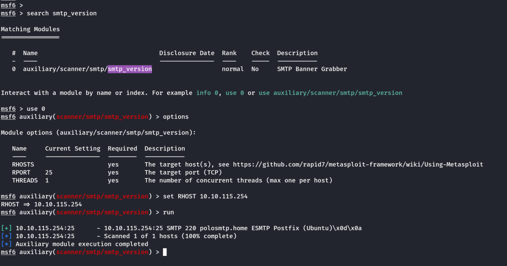
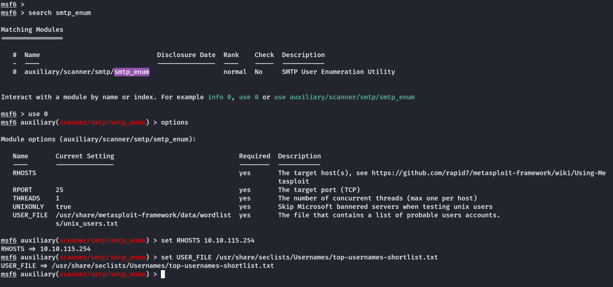
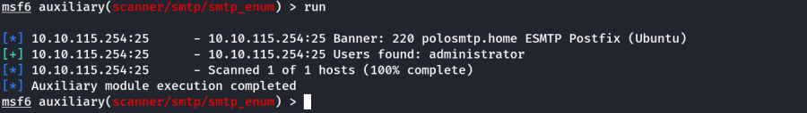

Mail Server
SMTP : Used to send mail from MUA to MSA/MTA
Simple Mail Transfer Protocol:
Default Port: 25
If we connect using telnet.
telnet <IP_Addr> 25
Commands:
HELO hostname
MAIL FROM: sender's address
RCPT TO: reciever's address
DATA
Type your mail and end with <Enter>.<Enter>
QUIT
To quit telnet
POP3/IMAP : Used to recieve mail post authentication from MTA/MDA to MUA
Post Office Protocol Version 3:
Default Port: 110
If we connect using telnet.
telnet <IP_Addr> 110
Commands:
USER username
PASS password
STAT
Shows the mails and size in format (nn mm) nn: no of mails mm: total size of inbox in octet(bytes)
LIST
Lists all the mails
RETR 1
Retrieves 1st item in the list. (2,3.... Retrieves subsequent items in the list)
Internet Message Access protocol:
Default Port: 143
If we connect using telnet.
telnet <IP_Addr> 143
Commands:
c1 LOGIN frank D2xc9CgD
c2 LIST "" "*"
c3 EXAMINE INBOX
c4 LOGOUT
THM: SMTP Theory
Enumerating Server Details
Poorly configured or vulnerable mail servers can often provide an initial foothold into a network, but prior to launching an attack, we want to fingerprint the server to make our targeting as precise as possible. We're going to use the "smtp_version" module in MetaSploit to do this. As its name implies, it will scan a range of IP addresses and determine the version of any mail servers it encounters.
auxiliary/scanner/smtp/smtp_version

Enumerating Users from SMTP
The SMTP service has two internal commands that allow the enumeration of users: VRFY (confirming the names of valid users) and EXPN (which reveals the actual address of user’s aliases and lists of e-mail (mailing lists). Using these SMTP commands, we can reveal a list of valid users
We can do this manually, over a telnet connection- however Metasploit comes to the rescue again, providing a handy module appropriately called "smtp_enum" that will do the legwork for us! Using the module is a simple matter of feeding it a host or range of hosts to scan and a wordlist containing usernames to enumerate.
Requirements
As we're going to be using Metasploit for this, it's important that you have Metasploit installed. It is by default on both Kali Linux and Parrot OS; however, it's always worth doing a quick update to make sure that you're on the latest version before launching any attacks. You can do this with a simple "sudo apt update", and accompanying upgrade- if any are required.
auxiliary/scanner/smtp/smtp_enum

Note: We can use the default wordlist or we can use a small one as suggested by the room using seclists.
Next, we run it.

Alternatives
It's worth noting that this enumeration technique will work for the majority of SMTP configurations; however there are other, non-metasploit tools such as smtp-user-enum that work even better for enumerating OS-level user accounts on Solaris via the SMTP service. Enumeration is performed by inspecting the responses to VRFY, EXPN, and RCPT TO commands.
This technique could be adapted in future to work against other vulnerable SMTP daemons, but this hasn’t been done as of the time of writing. It's an alternative that's worth keeping in mind if you're trying to distance yourself from using Metasploit e.g. in preparation for OSCP.